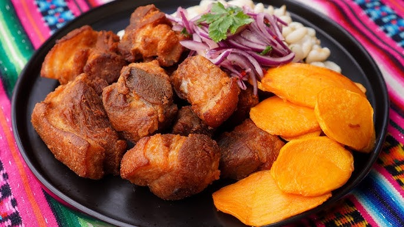

¡ Disfruta de un chicharrón crocante, jugoso y lleno de sabor peruano !

Ingredientes
- 1 kg de panceta de cerdo
- 2 dientes de ajo
- 1 cucharadita de sal
- 1 cucharadita de comino
- 1 taza de agua
- 1 chorrito de aceite (opcional)
- Camote frito y mote para acompañar
Preparación
- Corta la panceta de cerdo en trozos medianos.
- Sazona con ajo molido, sal y comino.
- Coloca los trozos en una olla con una taza de agua.
- Cocina a fuego medio hasta que el agua se evapore.
- El cerdo soltará su propia grasa y se dorará solo.
- Fríe hasta que quede crocante por fuera y jugoso por dentro.
- Sirve acompañado de camote frito y mote.
Video de Preparación